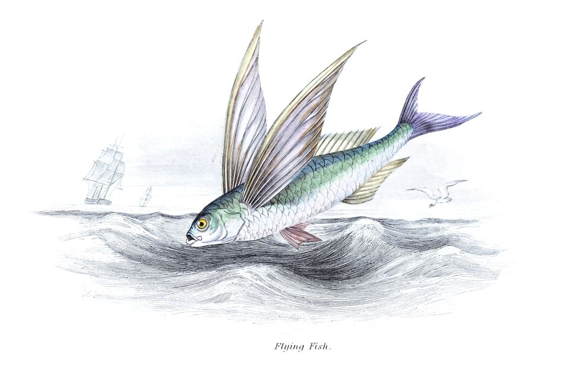
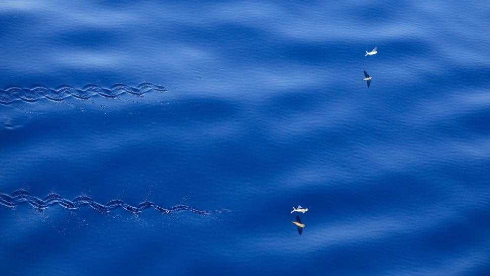

Flying fish: Real fish, but not really flying

Flying fish erupt out of the ocean and can be airborne for up to 45 seconds, but they do not actually fly.
In warm ocean waters around the world, you may see a strange sight: A fish leaping from the water and soaring dozens of meters before returning to the ocean's depths. Early Mediterranean sailors thought these flying fish returned to the shore at night to sleep, and therefore called this family of marine fish Exocoetidae (in Latin, "ex-" means "out of" and "koitos" means bed).
What are flying fish?
There are about 40 species of flying fish, all of which tend to be cigar-shaped with long, wide pectoral fins on either side of their bodies. Broadly speaking, there are two categories of flying fish: "two-wingers," whose two large pectoral fins comprise most of the flying "lift" surface; and "four-wingers," which also have two enlarged pelvic fins in addition to the two long pectoral fins. All flying fish have an asymmetrical, vertically forked tail (a shape known as hypocercal), with vertebrae extending into the longer, bottom lobe of the fork, making it look sort of like a boat’s rudder.
These unusual fish range in length from about 6 to 20 inches (15 to 50 centimeters), or about one or two brick lengths.
The fish's eyes, particularly the cornea (the pyramid-shaped barrier that protects their eyes), have evolved to enable the fish to see underwater as well as in the air.
 Flying fish don't actually fly; they glide
Flying fish soar at very high speeds above the water. The fish are so fast, that for decades, biologists couldn't tell for sure if the fish were propelling themselves by flapping their pectoral fins and flying like a bird, or if the fish were using some unique method of propulsion. It wasn't until 1941 that scientists published high-speed photographs of flying fish in action in the journal Zoologica.
The longest flying fish glide ever recorded was a fish that soared for 45 seconds at an estimated speed of 30 km/h (19 mph), according to Guinness World Records.